Problemas y ejercicios de la distribución binomial
1La última novela de un autor ha tenido un gran éxito, hasta el punto de que el 80% de los lectores ya la han leido. Un grupo de 4 amigos son aficionados a la lectura:
1¿Cuál es la probabilidad de que en el grupo hayan leido la novela 2 personas?
2¿Y cómo máximo 2?
2Un agente de seguros vende pólizas a cinco personas de la misma edad y que disfrutan de buena salud. Según las tablas actuales, la probabilidad de que una persona en estas condiciones viva 30 años o más es 2/3. Hállese la probabilidad de que, transcurridos 30 años, vivan:
1Las cinco personas
2Al menos tres personas
3Exactamente dos personas
3Se lanza una moneda cuatro veces. Calcular la probabilidad de que salgan más caras que cruces
4Si de seis a siete de la tarde se admite que un número de teléfono de cada cinco está comunicando, ¿cuál es la probabilidad de que, cuando se marquen 10 números de teléfono elegidos al azar, sólo comuniquen dos?
5La probabilidad de que un hombre acierte en el blanco es 1/4. Si dispara 10 veces ¿cuál es la probabilidad de que acierte exactamente en tres ocasiones? ¿Cuál es la probabilidad de que acierte por lo menos en una ocasión?
6En unas pruebas de alcoholemia se ha observado que el 5% de los conductores controlados dan positivo en la prueba y que el 10% de los conductores controlados no llevan puesto el cinturón de seguridad. También se ha observado que las dos infracciones son independientes. Un guardia de tráfico para cinco conductores al azar. Si tenemos en cuenta que el número de conductores es suficientemente importante como para estimar que la proporción de infractores no varía al hacer la selección
1Determinar la probabilidad de que exactamente tres conductores hayan cometido alguna de las dos infracciones
2Determine la probabilidad de que al menos uno de los conductores controlados haya cometido alguna de las dos infracciones
7La probabilidad de que un artículo producido por una fabrica sea defectuoso es p = 0.02. Se envió un cargamento de 10.000 artículos a unos almacenes. Hallar el número esperado de artículos defectuosos, la varianza y la desviación típica
8En una urna hay 30 bolas, 10 rojas y el resto blancas. Se elige una bola al azar y se anota si es roja; el proceso se repite, devolviendo la bola, 10 veces. Calcular la media y la desviación típica
9Un laboratorio afirma que una droga causa efectos secundarios en una proporción de 3 de cada 100 pacientes. Para contrastar esta afirmación, otro laboratorio elige al azar a 5 pacientes a los que aplica la droga. ¿Cuál es la probabilidad de los siguientes sucesos?
1Ningún paciente tenga efectos secundarios
2Al menos dos tengan efectos secundarios
3¿Cuál es el número medio de pacientes que espera laboratorio que sufran efectos secundarios si elige 100 pacientes al azar?
- 1
- 2
- 3
- 4
- 5
- 6
- 7
- 8
- 9
Ejercicio 1 resuelto
La última novela de un autor ha tenido un gran éxito, hasta el punto de que el 80% de los lectores ya la han leido. Un grupo de 4 amigos son aficionados a la lectura:
Soluciones:1¿Cuál es la probabilidad de que en el grupo hayan leido la novela 2 personas?
B(4, 0.2) p = 0.8 q = 0.2
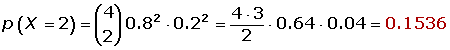
2¿Y cómo máximo 2?
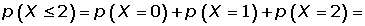
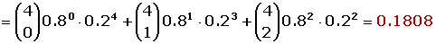
Ejercicio 2 resuelto
Un agente de seguros vende pólizas a cinco personas de la misma edad y que disfrutan de buena salud. Según las tablas actuales, la probabilidad de que una persona en estas condiciones viva 30 años o más es 2/3. Hállese la probabilidad de que, transcurridos 30 años, vivan:
Soluciones:1Las cinco personas
B(5, 2/3) p = 2/3 q = 1/3
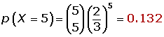
2Al menos tres personas
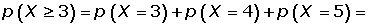
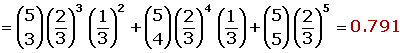
3Exactamente dos personas
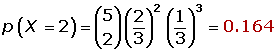
Ejercicio 3 resuelto
Se lanza una moneda cuatro veces. Calcular la probabilidad de que salgan más caras que cruces
B(4, 0.5) p = 0.5q = 0.5
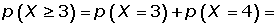
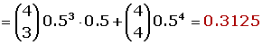
Ejercicio 4 resuelto
Si de seis a siete de la tarde se admite que un número de teléfono de cada cinco está comunicando, ¿cuál es la probabilidad de que, cuando se marquen 10 números de teléfono elegidos al azar, sólo comuniquen dos?
B(10, 1/5)p = 1/5q = 4/5
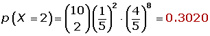
Ejercicio 5 resuelto
La probabilidad de que un hombre acierte en el blanco es 1/4. Si dispara 10 veces ¿cuál es la probabilidad de que acierte exactamente en tres ocasiones? ¿Cuál es la probabilidad de que acierte por lo menos en una ocasión?
B(10, 1/4) p = 1/4q = 3/4
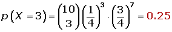
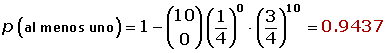
Ejercicio 6 resuelto
En unas pruebas de alcoholemia se ha observado que el 5% de los conductores controlados dan positivo en la prueba y que el 10% de los conductores controlados no llevan puesto el cinturón de seguridad. También se ha observado que las dos infracciones son independientes. Un guardia de tráfico para cinco conductores al azar. Si tenemos en cuenta que el número de conductores es suficientemente importante como para estimar que la proporción de infractores no varía al hacer la selección
Soluciones:1Determinar la probabilidad de que exactamente tres conductores hayan cometido alguna de las dos infracciones.
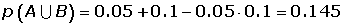
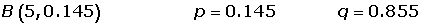
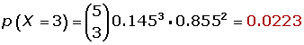
2Determine la probabilidad de que al menos uno de los conductores controlados haya cometido alguna de las dos infracciones.
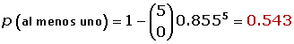
Ejercicio 7 resuelto
La probabilidad de que un artículo producido por una fabrica sea defectuoso es p = 0.02. Se envió un cargamento de 10.000 artículos a unos almacenes. Hallar el número esperado de artículos defectuosos, la varianza y la desviación típica.

Ejercicio 8 resuelto
En una urna hay 30 bolas, 10 rojas y el resto blancas. Se elige una bola al azar y se anota si es roja; el proceso se repite, devolviendo la bola, 10 veces. Calcular la media y la desviación típica.
B(10, 1/3) p = 1/3q = 2/3
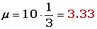
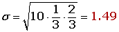
Ejercicio 9 resuelto
Un laboratorio afirma que una droga causa efectos secundarios en una proporción de 3 de cada 100 pacientes. Para contrastar esta afirmación, otro laboratorio elige al azar a 5 pacientes a los que aplica la droga. ¿Cuál es la probabilidad de los siguientes sucesos?
Soluciones:1Ningún paciente tenga efectos secundarios.
B(100, 0.03) p = 0.03 q = 0.97
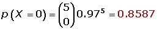
2Al menos dos tengan efectos secundarios.
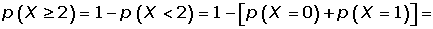
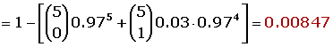
3¿Cuál es el número medio de pacientes que espera laboratorio que sufran efectos secundarios si elige 100 pacientes al azar?
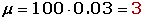
 Ejercicios
Ejercicios